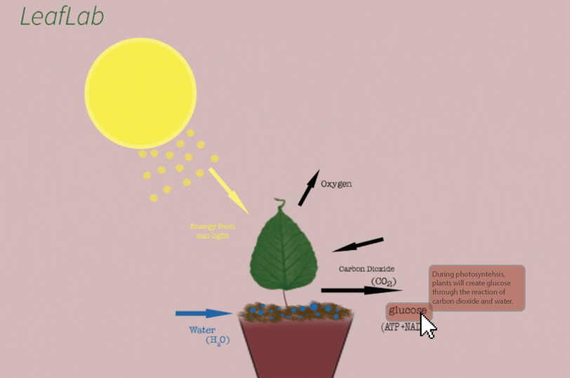
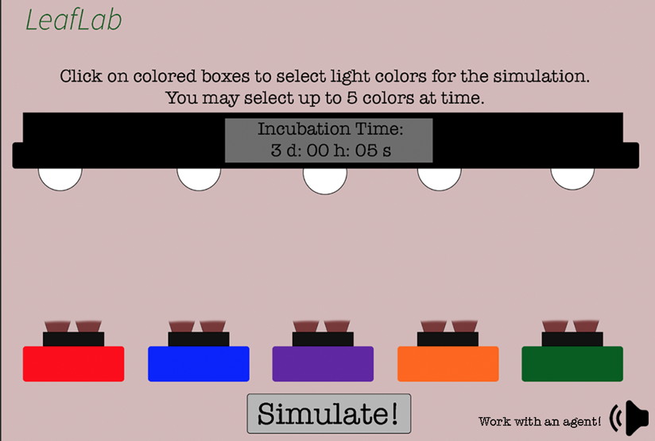

Learning Objectives
(Based on Bloom’s Taxonomy)
- Gain attention of students: Present on the projector screen/board the word photosynthesis separated to make two smaller words “photo” and “synthesis”. Ask students to define what each of the smaller words mean. (Photo means light, Synthesis means putting together).
- Make Connection:Ask students if they have plants or if they know how to feed their plants. Make the connection between the words “photo” and “synthesis” and their knowledge of how plants obtain food.
-
Prepare students for questions and activate prior knowledge: “What do you think photosynthesis means?”
- Advance Organizer: Based on the students’ responses to the previous question, “what do you think photosynthesis means?”, we will create a relatively general and abstract concept map with the students in order to recall any potential prior knowledge about the process of photosynthesis. Following Mayer’s suggestions, the instructors should not include any new information on the advance organizer concept maps (Driscoll, 2005, p. 138).
- Preliminary Concept Map of Students’ Prior Knowledge
- Tell students the process in which plant organisms capture light energy from the sunlight and change it into chemical energy= photosynthesis.
- Present Instructional Content
- Present the following question(s): What is the definition of photosynthesis?
- Present the responses to these question(s) through a collaborative, preliminary concept map (advance organizer Fig 1.1) of the students’ responses and factual information.
- Ask students to copy down the collaborative concept map in their notes as they will be required to update their concept maps after exposure to more details.
“Plants need food but they do not have to wait on people or animals to provide for them. Most plants are able to make their own food whenever they need it. This is done using light and the process is called photosynthesis. Therefore, photosynthesis is the process by which plants make their own food. We will add more details to this definition and concept map after understanding the process of photosynthesis.” (Photosynthesis for Kids, 2016)
- Present the following question(s): What involves the process of photosynthesis? What parts or elements are needed?
- Present the responses to these questions with visuals and conceptual information in the form of a video of photosynthesis: (Stop video at 9:12)
- Ask students to individually make an updated concept map after watching the video for their notes and submit through online assignment on class sites page. See secondary concept map below (Fig. 1.2) for an example of students’ updated concept map. (Falls under learning objective #1: recall definition of photosynthesis).
- Ask students to answer knowledge questions about the video (Falls under learning objective #1: recall definition of photosynthesis).
- Present the following question(s): Are there multiple stages in the process of photosynthesis? If so, what are they?
- Ask students to engage in a simulation to understand two stages of photosynthesis commonly known as the Light Dependent Reactions and the Calvin Cycle. Before starting the actual simulation, we will have a brief pre-training diagram that will prepare students for learning new information by exposing and introducing students to new terms (Fig. 1.6).
- Students will explain the two stages of the process by answering knowledge questions about the simulation.
- Light dependent reactions occur in the thylakoid membrane of the chloroplasts and take place only when light is available. During these reactions light energy is converted to chemical energy. Chlorophyll and other pigments absorb energy from sunlight. This energy is transferred to the photosystems responsible for photosynthesis. Water is used to provide electrons and hydrogen ions but also produces oxygen. Do you remember what happens to the oxygen? The electrons and hydrogen ions are used to create ATP and NADPH. (Photosynthesis for Kids, 2016)
- The Calvin Cycle reactions occur in the stroma of the chloroplasts. Although these reactions can take place without light, the process requires ATP and NADPH which were created using light in the first stage. Carbon dioxide and energy from ATP along with NADPH are used to form glucose. (Photosynthesis for Kids, 2016)
- Present the following question(s): Why is photosynthesis important? Does it affect us directly? How does it affect us and our environment? What would our environment look like without the existence of this process?
- Final Assessment: Ask students to collaborate in groups to develop a 3 page write-up on the implications of photosynthesis and its relationship to our environment. Students must address the processes of photosynthesis (including the chemical makeup), its positive impact to our environment, and the possible detriments without it. Assignment may be submitted by next class.
- More Practice: In addition to the final assessment, students will engage in more practice through multiple module sets on the terms and concepts of photosynthesis on the tutoring system, Cerego. https://cerego.com/sets/728693
- Feedback: Students will be provided immediate feedback on Cerego (tutoring system).
Learning Objectives
- Students will be able to recall the definition of photosynthesis.
- Students will be able to explain the process of photosynthesis, including the Light Dependent Reactions and the Calvin Cycle.
- Students will be able to apply their knowledge about photosynthesis through the use of simulations.
- Students will be able to formulate a projection of what our environment would look like without photosynthesis.
According to Bloom’s Taxonomy, the following dimensions can be traced for the above-mentioned learning objectives (Bloom et al., 1956):
- Evaluating (Objective 4)
- Analyzing (Objective 2)
- Applying (Objective 3)
- Understanding (Objective 1)
- Remembering (Objective 1)
Types of Knowledge
Concept Map
This is the expected concept map of the students’ updated learning of the topic. As you can see, this differs from the preliminary concept map. This is to be submitted through the online class site.
Narrative of Environment
The setting of the lesson takes place in a 9th grade high school science classroom. The arrangement of the classroom is very important to take into consideration. As you can see in Figure 1.3, the students’ tables are arranged in the shape of a horseshoe, or the letter “U”. This particular arrangement supports both the student-to-student interaction as well as the teacher-to-student interaction. It provides easier access for the students to face the instructional area, for the instructor to interact with and monitor the entire class, encourages discussion and active engagement among students, and promotes relationships between the learners and the instructor. A large screen is at the front of the classroom, allowing the instructor to display the collaborative concept map (Fig. 1.1), the informational video, and the various external sources that the students a required to use (simulation, class site, Cerego). Figure 1.5 illustrates an example of what the student’s screen may look like. In this example, a student is following along by creating his or her own representation of a concept map, using Adobe Illustrator software.
Pre-training interface

Example of photosynthesis simulation interface showing different lighting options

Example of simulation interface showing effects of light on photosynthesis after the plants are exposed to light over a significant time period
Theoretical Framework
Cognitive Load Theory, (Driscoll, 2005
Multimedia Theory/Principles, Cognitive Theory of Multimedia Learning (Mayer, 2009)
Meaningful Learning Theory Ausubel’s Meaningful Learning Theory,
Cognitive Information Processing Model by Schunk (1996)
For a detailed description of the project & references, please access the design document
here.
Team Members : Christine Lee, Heena Gulati, Katalina U. Park
Supervised by: Elizabeth McAlpin